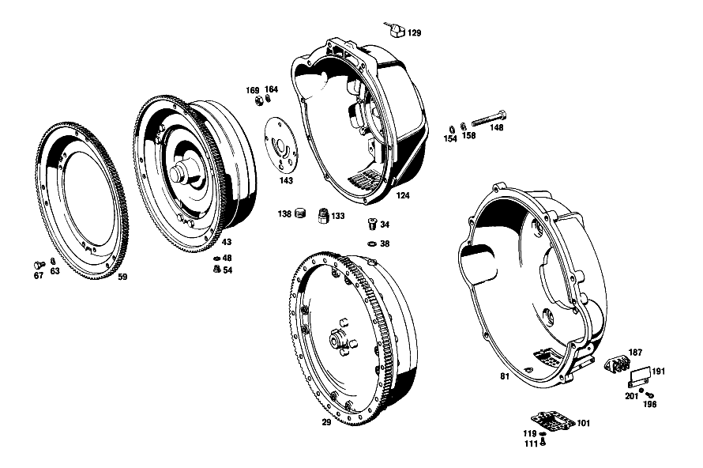

| № | Артикул | Название | Кол. | Примечание | Ограничение |
|---|---|---|---|---|---|
| 43 | A 109 250 07 02 | ГИДР.СЦЕПЛЕНИЕ | - | Автоматическая коробка переключения передач | |
| 43 | A 109 250 15 02 | ГИДР.СЦЕПЛЕНИЕ | - | Автоматическая коробка переключения передач [403] НЕ УСТАНОВЛЕНО | |
| 48 | N 007603 010100 | - Уплотнительное кольцо | 1 | 10X13.5 AL Автоматическая коробка переключения передач | |
| 54 | N 000908 010000 | - Резьбовая пробка | 1 | M10X1 Автоматическая коробка переключения передач | |
| 59 | A 116 030 03 12 | - ЗУБЧАТЫЙ ВЕНЕЦ | 1 | Автоматическая коробка переключения передач [402] БОЛЬШЕ НЕ ПОСТАВЛЯЕТСЯ | |
| 63 | N 000137 008204 | - Пружинная шайба | - | Автоматическая коробка переключения передач | |
| 63 | N 000137 008212 | - Пружинная шайба | 6 | Автоматическая коробка переключения передач | |
| 67 | N 000933 008325 | - Винт | - | Автоматическая коробка переключения передач | |
| 67 | A 124 990 21 01 | - болт | 6 | Автоматическая коробка переключения передач | |
| 129 | A 115 250 03 57 | ВЕНТИЛЯЦИЯ | - | Автоматическая коробка переключения передач | |
| 129 | A 115 250 00 66 | Вентиляционная трубка | 1 | Автоматическая коробка переключения передач [002] 016 FROM CHASSIS 001859 ALSO INSTALLED ON, SEE FOOTNOTE 14 [014] 001473, 001548, 001702, 001722, 001786, 001793, 001797, 001801, 001804, 001853- 001857. | |
| 133 | A 115 257 10 57 | - Резьбовое кольцо | 1 | Автоматическая коробка переключения передач [002] 016 FROM CHASSIS 001859 ALSO INSTALLED ON, SEE FOOTNOTE 14 [014] 001473, 001548, 001702, 001722, 001786, 001793, 001797, 001801, 001804, 001853- 001857. | |
| 138 | N 000908 022010 | - Резьбовая пробка | 2 | Автоматическая коробка переключения передач [002] 016 FROM CHASSIS 001859 ALSO INSTALLED ON, SEE FOOTNOTE 14 [014] 001473, 001548, 001702, 001722, 001786, 001793, 001797, 001801, 001804, 001853- 001857. | |
| 143 | A 115 277 03 14 | ПЛАСТИНА ПРОМЕЖУТОЧНАЯ | 1 | Автоматическая коробка переключения передач | |
| 154 | N 000125 010504 | ШАЙБА | 2 | КАРТЕР СЦЕПЛЕНИЯ НА ПРОМЕЖУТОЧНОМ ФЛАНЦЕ Автоматическая коробка переключения передач [002] 016 FROM CHASSIS 001859 ALSO INSTALLED ON, SEE FOOTNOTE 14 [014] 001473, 001548, 001702, 001722, 001786, 001793, 001797, 001801, 001804, 001853- 001857. | |
| 158 | N 000137 010201 | Пружинная шайба | 8 | КАРТЕР СЦЕПЛЕНИЯ НА ПРОМЕЖУТОЧНОМ ФЛАНЦЕ Автоматическая коробка переключения передач [002] 016 FROM CHASSIS 001859 ALSO INSTALLED ON, SEE FOOTNOTE 14 [014] 001473, 001548, 001702, 001722, 001786, 001793, 001797, 001801, 001804, 001853- 001857. | |
| 164 | N 000137 012203 | Пружинная шайба | - | Автоматическая коробка переключения передач | |
| 164 | A 094 990 42 05 | Пружинная шайба | 4 | КАРТЕР СЦЕПЛЕНИЯ НА ПРОМЕЖУТОЧНОМ ФЛАНЦЕ Автоматическая коробка переключения передач | |
| 169 | N 000934 010009 | Гайка | - | Автоматическая коробка переключения передач | |
| 169 | N 304032 010002 | Шестигранная гайка | 2 | КАРТЕР СЦЕПЛЕНИЯ НА ПРОМЕЖУТОЧНОМ ФЛАНЦЕ; M10 Автоматическая коробка переключения передач [002] 016 FROM CHASSIS 001859 ALSO INSTALLED ON, SEE FOOTNOTE 14 [014] 001473, 001548, 001702, 001722, 001786, 001793, 001797, 001801, 001804, 001853- 001857. | |
| 315 | A 010 250 31 03 | Ведомый диск сцепления | 1 | Коробка передач [697] ДЕТАЛЬ ПОСТАВЛЯЕТСЯ ТОЛЬКО/ИЛИ ТАКЖЕ КАК ЗАП.ЧАСТЬ | |
| 385 | N 000137 010201 | Пружинная шайба | 1 | Коробка передач [002] 016 FROM CHASSIS 001859 ALSO INSTALLED ON, SEE FOOTNOTE 14 [014] 001473, 001548, 001702, 001722, 001786, 001793, 001797, 001801, 001804, 001853- 001857. | |
| 389 | N 913021 010001 | ГАЙКА | - | Коробка передач | |
| 389 | N 304035 010001 | Шестигранная гайка | 1 | Коробка передач [002] 016 FROM CHASSIS 001859 ALSO INSTALLED ON, SEE FOOTNOTE 14 [014] 001473, 001548, 001702, 001722, 001786, 001793, 001797, 001801, 001804, 001853- 001857. | |
| 508 | A 115 251 00 80 | Прокладка фланца | 1 | ИСПОЛН. ЦИЛ. НА КОРПУСЕ СЦЕПЛ. Коробка передач [002] 016 FROM CHASSIS 001859 ALSO INSTALLED ON, SEE FOOTNOTE 14 [014] 001473, 001548, 001702, 001722, 001786, 001793, 001797, 001801, 001804, 001853- 001857. | |
| 511 | N 000127 008203 | Пружинное кольцо | 2 | ИСПОЛН. ЦИЛ. НА КОРПУСЕ СЦЕПЛ. Коробка передач | |
| 516 | N 000933 008152 | Винт | - | Коробка передач | |
| 516 | N 304017 008027 | Винт с 6-гранной головкой | 2 | ИСПОЛН. ЦИЛ. НА КОРПУСЕ СЦЕПЛ. Коробка передач | |
| 531 | N 073379 006101 | Шланг | 1 | Рулевое управление: ВлевоКоробка передач [012] UP TO CHASSIS 008194 | |
| 536 | A 107 295 01 73 | Удерживающая пружина | 1 | Коробка передач [002] 016 FROM CHASSIS 001859 ALSO INSTALLED ON, SEE FOOTNOTE 14 [014] 001473, 001548, 001702, 001722, 001786, 001793, 001797, 001801, 001804, 001853- 001857. | |
| 541 | N 000127 008203 | Пружинное кольцо | 1 | Рулевое управление: ВлевоКоробка передач | |
| 546 | N 304017 008016 | Винт с 6-гранной головкой | 1 | M8X16 Рулевое управление: ВлевоКоробка передач | |
| A 109 250 15 02 | ГИДР.СЦЕПЛЕНИЕ | 1 | Автоматическая коробка переключения передач | ||
| A 109 250 01 05 | КОРПУС | 1 | Автоматическая коробка переключения передач [402] БОЛЬШЕ НЕ ПОСТАВЛЯЕТСЯ | ||
| A 109 257 01 50 | втулка | 1 | [002] 016 FROM CHASSIS 001859 ALSO INSTALLED ON, SEE FOOTNOTE 14 [014] 001473, 001548, 001702, 001722, 001786, 001793, 001797, 001801, 001804, 001853- 001857. | ||
| N 000908 022010 | - Резьбовая пробка | 2 | Автоматическая коробка переключения передач [002] 016 FROM CHASSIS 001859 ALSO INSTALLED ON, SEE FOOTNOTE 14 [014] 001473, 001548, 001702, 001722, 001786, 001793, 001797, 001801, 001804, 001853- 001857. | ||
| N 000931 010239 | Винт | 6 | КАРТЕР СЦЕПЛЕНИЯ НА ПРОМЕЖУТОЧНОМ ФЛАНЦЕ Автоматическая коробка переключения передач | ||
| N 000931 010271 | Винт | 2 | КАРТЕР СЦЕПЛЕНИЯ НА ПРОМЕЖУТОЧНОМ ФЛАНЦЕ Автоматическая коробка переключения передач | ||
| A 094 990 33 06 | Винт | 2 | КАРТЕР СЦЕПЛЕНИЯ НА ПРОМЕЖУТОЧНОМ ФЛАНЦЕ Автоматическая коробка переключения передач | ||
| N 000912 012059 | Винт | 1 | КАРТЕР СЦЕПЛЕНИЯ НА ПРОМЕЖУТОЧНОМ ФЛАНЦЕ Автоматическая коробка переключения передач | ||
| N 000931 012137 | Винт | 1 | КАРТЕР СЦЕПЛЕНИЯ НА ПРОМЕЖУТОЧНОМ ФЛАНЦЕ Автоматическая коробка переключения передач | ||
| N 000912 012062 | Винт | 1 | КАРТЕР СЦЕПЛЕНИЯ НА ПРОМЕЖУТОЧНОМ ФЛАНЦЕ Автоматическая коробка переключения передач | ||
| N 000125 013003 | ШАЙБА | 3 | КАРТЕР СЦЕПЛЕНИЯ НА ПРОМЕЖУТОЧНОМ ФЛАНЦЕ Автоматическая коробка переключения передач | ||
| N 000934 012021 | Гайка | 3 | КАРТЕР СЦЕПЛЕНИЯ НА ПРОМЕЖУТОЧНОМ ФЛАНЦЕ Автоматическая коробка переключения передач | ||
| A 001 250 77 04 | ДИСК НАЖИМНОЙ | - | Коробка передач | ||
| A 002 250 22 04 | ДИСК НАЖИМНОЙ | - | Коробка передач | ||
| A 003 250 47 04 | Нажимная пластина | 1 | Коробка передач [697] ДЕТАЛЬ ПОСТАВЛЯЕТСЯ ТОЛЬКО/ИЛИ ТАКЖЕ КАК ЗАП.ЧАСТЬ | ||
| A 109 586 00 25 | - РЕМКОМПЛЕКТ | - | НАКЛАДКА СЦЕПЛ. ФРИКЦ. Коробка передач [402] БОЛЬШЕ НЕ ПОСТАВЛЯЕТСЯ | ||
| A 000 252 60 10 | - НАКЛАДКА СЦЕПЛ. ФРИКЦ. | - | Коробка передач [402] БОЛЬШЕ НЕ ПОСТАВЛЯЕТСЯ [007] ПО ОТДЕЛЬНОСТИ БОЛЬШЕ НЕ ПОСТАВЛЯЕТСЯ,ТОЛЬКО В РЕМ.КОМПЛЕКТЕ | ||
| A 000 252 22 75 | - ЗАКЛЕПКА | - | Коробка передач [417] БОЛЬШЕ НЕ ПОСТАВЛЯЕТСЯ, ЗАКАЗЫВАТЬ КОМПЛЕКТ ПОСТАВКИ [402] БОЛЬШЕ НЕ ПОСТАВЛЯЕТСЯ [007] ПО ОТДЕЛЬНОСТИ БОЛЬШЕ НЕ ПОСТАВЛЯЕТСЯ,ТОЛЬКО В РЕМ.КОМПЛЕКТЕ | ||
| N 000933 008154 | Винт | - | Коробка передач | ||
| N 304017 008021 | Винт с 6-гранной головкой | 6 | СЦЕПЛЕНИЕ К МАХОВИКУ; M8X20 Коробка передач | ||
| N 000127 008203 | Пружинное кольцо | 6 | СЦЕПЛЕНИЕ К МАХОВИКУ Коробка передач | ||
| A 117 251 25 01 | КАРТЕР СЦЕПЛ. | 1 | Коробка передач | ||
| A 117 251 25 01 | КАРТЕР СЦЕПЛ. | 1 | Коробка передач | ||
| A 117 991 03 15 | Шаровой палец | 1 | Коробка передач | ||
| N 000137 010201 | Пружинная шайба | 6 | КАРТЕР СЦЕПЛЕНИЯ НА КАРТЕРЕ КП Коробка передач [002] 016 FROM CHASSIS 001859 ALSO INSTALLED ON, SEE FOOTNOTE 14 [014] 001473, 001548, 001702, 001722, 001786, 001793, 001797, 001801, 001804, 001853- 001857. | ||
| N 000934 010009 | Гайка | - | Коробка передач | ||
| N 304032 010002 | Шестигранная гайка | 6 | КАРТЕР СЦЕПЛЕНИЯ НА КАРТЕРЕ КП; M10 Коробка передач [002] 016 FROM CHASSIS 001859 ALSO INSTALLED ON, SEE FOOTNOTE 14 [014] 001473, 001548, 001702, 001722, 001786, 001793, 001797, 001801, 001804, 001853- 001857. | ||
| N 000931 010357 | Винт | - | Коробка передач | ||
| A 001 990 94 04 | болт | 6 | КАРТЕР СЦЕПЛЕНИЯ НА ПРОМЕЖУТОЧНОМ ФЛАНЦЕ Коробка передач | ||
| N 000931 010271 | Винт | 2 | КАРТЕР СЦЕПЛЕНИЯ НА ПРОМЕЖУТОЧНОМ ФЛАНЦЕ Коробка передач | ||
| A 094 990 33 06 | Винт | 2 | КАРТЕР СЦЕПЛЕНИЯ НА ПРОМЕЖУТОЧНОМ ФЛАНЦЕ Коробка передач | ||
| N 000912 012059 | Винт | 1 | КАРТЕР СЦЕПЛЕНИЯ НА ПРОМЕЖУТОЧНОМ ФЛАНЦЕ Коробка передач | ||
| N 000931 012137 | Винт | 1 | КАРТЕР СЦЕПЛЕНИЯ НА ПРОМЕЖУТОЧНОМ ФЛАНЦЕ Коробка передач | ||
| N 000912 012062 | Винт | 1 | КАРТЕР СЦЕПЛЕНИЯ НА ПРОМЕЖУТОЧНОМ ФЛАНЦЕ Коробка передач | ||
| N 000125 010504 | ШАЙБА | 2 | КАРТЕР СЦЕПЛЕНИЯ НА ПРОМЕЖУТОЧНОМ ФЛАНЦЕ Коробка передач | ||
| N 000125 013003 | ШАЙБА | 3 | КАРТЕР СЦЕПЛЕНИЯ НА ПРОМЕЖУТОЧНОМ ФЛАНЦЕ Коробка передач | ||
| N 000137 010201 | Пружинная шайба | 8 | КАРТЕР СЦЕПЛЕНИЯ НА ПРОМЕЖУТОЧНОМ ФЛАНЦЕ Коробка передач | ||
| N 000137 012203 | Пружинная шайба | - | Коробка передач | ||
| A 094 990 42 05 | Пружинная шайба | 4 | КАРТЕР СЦЕПЛЕНИЯ НА ПРОМЕЖУТОЧНОМ ФЛАНЦЕ Коробка передач | ||
| N 000934 010009 | Гайка | - | Коробка передач | ||
| N 304032 010002 | Шестигранная гайка | 2 | КАРТЕР СЦЕПЛЕНИЯ НА ПРОМЕЖУТОЧНОМ ФЛАНЦЕ; M10 Коробка передач | ||
| N 000934 012021 | Гайка | 3 | КАРТЕР СЦЕПЛЕНИЯ НА ПРОМЕЖУТОЧНОМ ФЛАНЦЕ Коробка передач | ||
| A 000 250 55 15 | ПОДШИПНИК ВЫЖИМНОЙ | 1 | Коробка передач [002] 016 FROM CHASSIS 001859 ALSO INSTALLED ON, SEE FOOTNOTE 14 [014] 001473, 001548, 001702, 001722, 001786, 001793, 001797, 001801, 001804, 001853- 001857. | ||
| A 000 250 68 15 | Выжимной подшипник | 1 | Коробка передач [002] 016 FROM CHASSIS 001859 ALSO INSTALLED ON, SEE FOOTNOTE 14 [014] 001473, 001548, 001702, 001722, 001786, 001793, 001797, 001801, 001804, 001853- 001857. | ||
| A 115 290 00 29 | Вилка выкл. сцепления | 1 | Коробка передач [002] 016 FROM CHASSIS 001859 ALSO INSTALLED ON, SEE FOOTNOTE 14 [014] 001473, 001548, 001702, 001722, 001786, 001793, 001797, 001801, 001804, 001853- 001857. | ||
| A 000 295 64 07 | Рабочий цилиндр | 1 | Коробка передач | ||
| A 000 295 19 83 | - МАНЖЕТА | 1 | Коробка передач [402] БОЛЬШЕ НЕ ПОСТАВЛЯЕТСЯ | ||
| A 000 295 03 73 | - ПРЕДОХРАНИТЕЛЬ | 1 | Коробка передач [402] БОЛЬШЕ НЕ ПОСТАВЛЯЕТСЯ | ||
| A 000 420 10 55 | - Клапан выпуска воздуха | 1 | Коробка передач | ||
| A 000 421 71 87 | - КОЛПАЧОК | - | Коробка передач | ||
| A 000 421 08 87 | - Защитный колпачок | 1 | Коробка передач | ||
| A 000 586 18 29 | ремкомплект | 1 | Коробка передач [010] UP TO CHASSIS 008480 | ||
| A 000 290 06 11 | Ремк-т раб.цилиндра сцеп. | 1 | Коробка передач [011] FROM CHASSIS 008481 | ||
| A 115 295 11 40 | ДЕРЖАТЕЛЬ | 1 | ИСПОЛН. ЦИЛ. НА КОРПУСЕ СЦЕПЛ. Рулевое управление: ВправоКоробка передач [002] 016 FROM CHASSIS 001859 ALSO INSTALLED ON, SEE FOOTNOTE 14 [014] 001473, 001548, 001702, 001722, 001786, 001793, 001797, 001801, 001804, 001853- 001857. | ||
| A 109 290 00 13 | ПРОВОД | - | Рулевое управление: ВлевоКоробка передач [012] UP TO CHASSIS 008194 | ||
| A 107 290 01 13 | ПРОВОД | 1 | Рулевое управление: ВлевоКоробка передач [013] FROM CHASSIS 008195 | ||
| A 109 290 01 13 | ПРОВОД | - | Рулевое управление: ВправоКоробка передач | ||
| A 100 320 39 53 | ПРОВОД | 1 | ШЛАНГ К РАБОЧЕМУ ЦИЛИНДРУ Рулевое управление: ВправоКоробка передач [409] ПРИ МОНТАЖЕ ПОДОГНАТЬ ПО МЕСТУ | ||
| A 109 295 00 40 | ДЕРЖАТЕЛЬ | 1 | Рулевое управление: ВлевоКоробка передач [012] UP TO CHASSIS 008194 | ||
| A 107 295 03 40 | Держатель | 1 | Рулевое управление: ВлевоКоробка передач [013] FROM CHASSIS 008195 | ||
| A 109 295 01 40 | ДЕРЖАТЕЛЬ | 1 | Рулевое управление: ВправоКоробка передач |
Позиций: 93 · подписано на схемах: 32 · колесо — плавный зум в курсор, перетаскивание — пан, двойной клик — зум, клик по артикулу — скопировать · наведите на строку или цифру на схеме — подсветка связки, клик — закрепить.